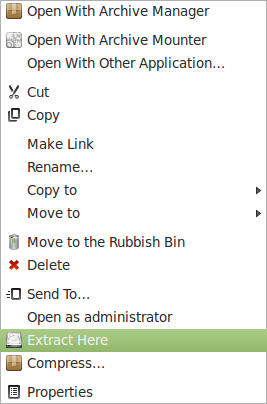
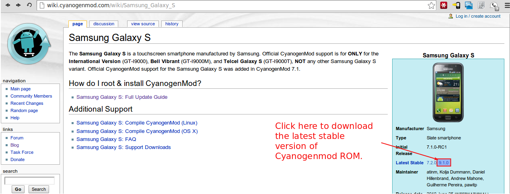
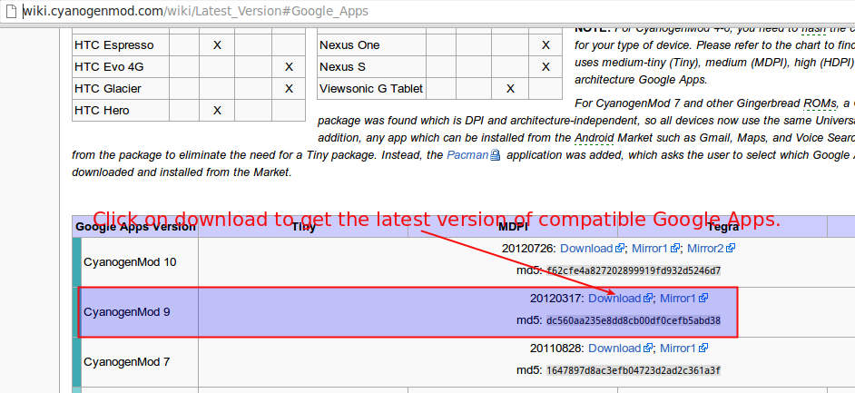

Flash Samsung Galaxy S (GT -I9000) with Cyanogenmod 9 on Linux
I had an old Samsung Galaxy S which was still on stock ROM hence it only ever got to gingerbread and then Samsung just decided not to upgrade and I upgraded the phone so this little gadget was till yesterday destined to live with the old gingerbread. Then yesterday, I just decided to play around with it and started reading so I know what are my options. Now wiki guide on Cyanogenmod site is quite nicely written but there were one or two steps here and there which had me confused for a little while so here is my usual step-by-step guide on how to go about it. UPDATE: Uploaded all the files to mediafire as requested in one of the comments below. These can be downloaded from following link: http://www.mediafire.com/?ims1bxp6b8yp8 Step 1: a) Download Heimdall Suite 1.3.2 Command-line Binary for your OS from here ; for Linux Mint you can use the Ubuntu link and install the downloaded "heimdall_1.3.2_i386.deb" file. b) Download hardcore’s Kernel with the ClockworkMod Recovery 2.5 here. This will download a file named "hardcore-speedmod.tar". I am assuming that it will be saved in "Downloads" directory but if you have a different location, please replace "Downloads" with appropriate directory. Step 2: Just to avoid any confusion, make a new directory in Downloads and name it "Galaxy_S". Step 3: Copy the downloaded file (from 1-b) "hardcore-speedmod.tar" into the new directory "Galaxy_S" Step 4: Now right-click on "hardcore-speedmod.tar" and select extract here as shown. This will extract the file zImage into the directory Galaxy_S.

Step 5: Connect microUSB cable to your computer but not the phone. Step 6: Power off the Samsung Galaxy S. Step 7: Connect the microUSB cable to Samsung Galaxy S. Step 8: Boot the phone in download mode by holding "HOME+Volume Down+POWER" buttons. Step 9: Open the terminal and type following commands:cd Downloads/Galaxy_S
sudo heimdall flash --kernel zImageA blue transfer bar will appear on the phone showing the kernel being transferred. Once completed, the device will reboot automatically. Step 10: Disconnect the phone from microUSB cable, switch it on and connect to your computer using the microUSB cable as mass storage.
Step 11: Download the latest Cyanogenmod ROM from here.

Step 12: Follow this link to land at above page and then download the latest version of Google Apps.
Step 13: You will now have following two zip files in your "Downloads" directory: a) cm-9.1.0-galaxysmtd.zip from Step 11.
b) gapps-ics-20120317-signed.zip from Step 12
Copy these two files into the root directory of the Samsung Galaxy S. Step 14: Now, disconnect the phone from microUSB and switch it off. Step 15: Boot the phone in Recovery mode by holding "HOME+Volume Up+POWER" buttons. You will be presented with various recovery options such as reboot phone etc. Step 17: Now use the Volume Up and Volume Down buttons to navigate options. Use Volume Down button to reach the option to Wipe data/factory reset and press POWER button to select this option. Step 18: Once done, Use Volume Down button to reach the option to wipe cache partition and press POWER button to select this option. Step 19: Next select "Install zip from sdcard" which will present another set of options where you should select "Choose zip from sdcard" Step 20: Now you will see the list of files on your SD Cards root directory. Select the file "cm-9.1.0-galaxysmtd.zip" and on following screen of options select "Yes". Step 21: Once installed, select +++++Go Back+++++ and again select "Install zip from sdcard" which will present another set of options where you should select "Choose zip from sdcard" Step 22: This time select the file "gapps-ics-20120317-signed.zip" and on following screen of options select "Yes". Step 23: Once installed, select +++++Go Back+++++ to return to main menu. Step 24: On main menu select "Reboot System now" option. Step 25: If all has gone as above, your phone will restart and after a while you will see cyanogenmod flash screen. This screen will be there for a good 1 to 2 minutes. Don’t panic and dont mess. Let system do it’s work and in some time you would have given a fresh lease of life to your old dieing Samsung Galaxy S.
Leave a comment